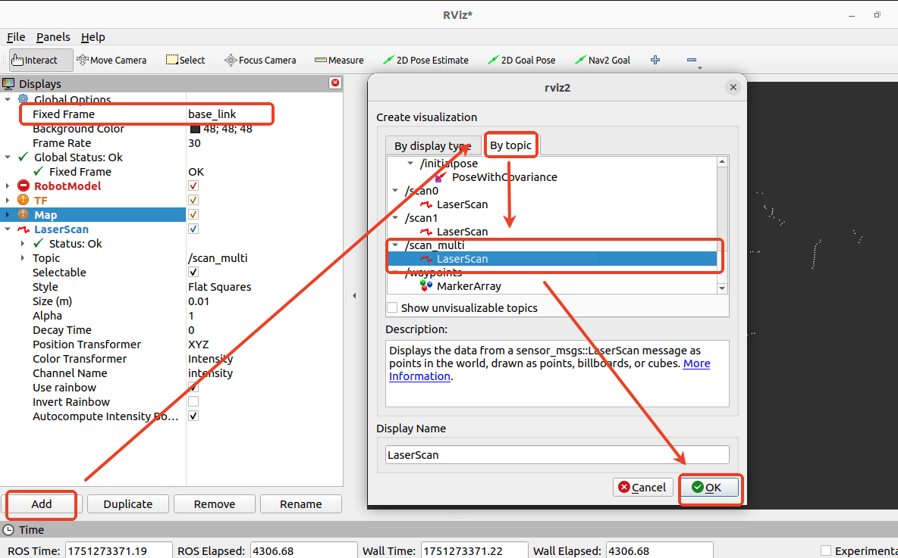
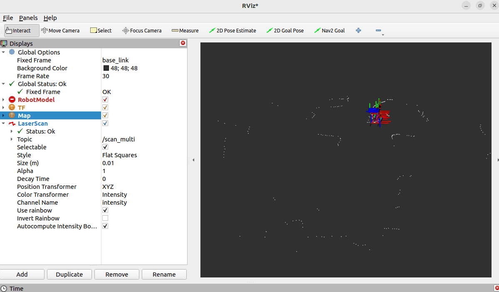
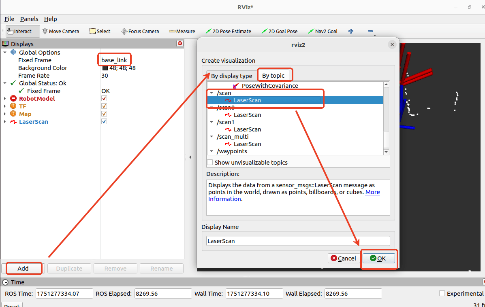
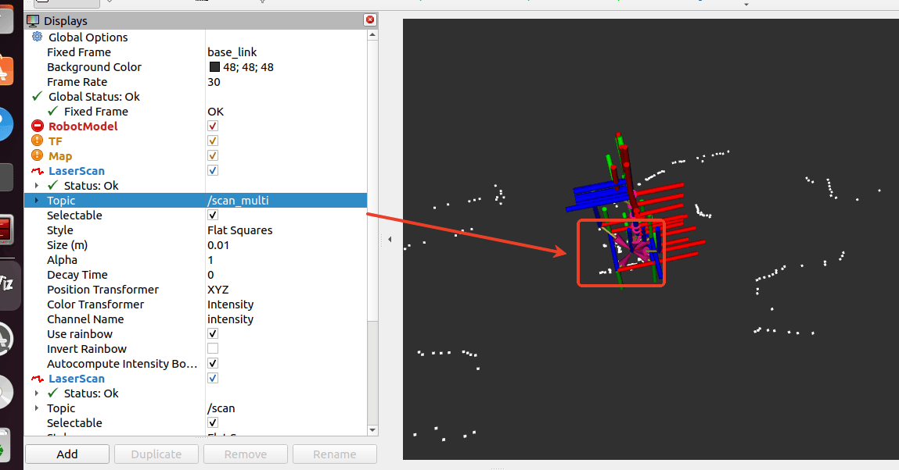
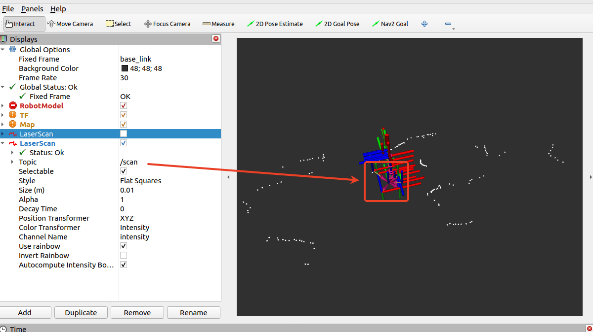
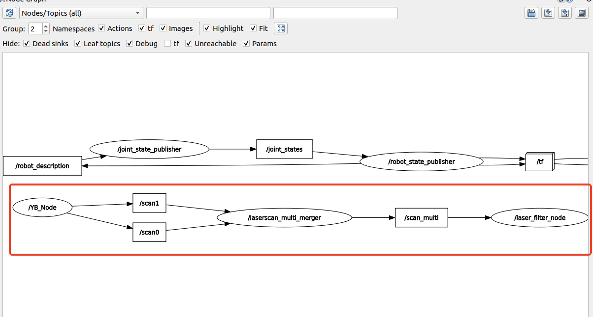

Слияние данных двух лидаров и фильтрация
В этом изделии используются два лидара — один в левой задней части робота, другой в правой передней. Поскольку алгоритмы построения карты и навигации, как правило, принимают данные только из одного топика лидара, перед началом построения карты и навигации данные обоих лидаров необходимо объединить (fusion) и отфильтровать. Слияние данных лидаров реализуется с помощью пакета ira_laser_tools.
1. Пакет ira_laser_tools
1.1. Введение в пакет
Основные функции пакета ira_laser_tools:
- Laser Scan Merge — объединение данных от нескольких лидаров в единое сканирование.
- Laser Scan Segmentation — разделение одного сканирования лидара на несколько виртуальных сканов.
- Angle limit — отсечение (обрезка) диапазона углов данных сканирования.
- Scan denoising — удаление шумовых точек из данных сканирования.
Слияние переднего и заднего лидаров в этом изделии реализуется за счёт вызова интерфейса объединения сканов (laser scan merging).
1.2. Исходный код пакета
Путь к исходному коду laserscan_multi_merger.cpp:
- Raspberry Pi 5 и Jetson-Nano
Код программы находится внутри запущенного Docker-контейнера. Путь в контейнере:
/root/M3Pro_ws/src/M3Pro_core/ira_laser_tools/src/laserscan_multi_merger.cpp
- Материнская плата Orin
Путь к коду программы:
/home/jetson/M3Pro_ws/src/M3Pro_core/ira_laser_tools/src/laserscan_multi_merger.cpp
Путь к файлу параметров laserscan_merge.yaml:
- Raspberry Pi 5 и Jetson-Nano
Код программы находится внутри запущенного Docker-контейнера. Путь в контейнере:
/root/M3Pro_ws/src/M3Pro_core/ira_laser_tools/config/laserscan_merge.yaml
- Материнская плата Orin
Путь к коду программы:
/home/jetson/M3Pro_ws/src/M3Pro_core/ira_laser_tools/config/laserscan_merge.yaml
Содержимое файла laserscan_merge.yaml приведено ниже.
laserscan_multi_merger :
ros__parameters :
destination_frame : "base_link"
cloud_destination_topic : "/merged_cloud"
scan_destination_topic : "/scan_multi"
laserscan_topics : "/scan0 /scan1"
angle_min : -3.14
angle_max : 3.14
angle_increment : 0.017453
scan_time : 0.0
range_min : 0.05
range_max : 4.0
На что здесь нужно обратить внимание:
destination_frame: система координат после слияния данных лидаров — здесьbase_link.cloud_destination_topic: топик объединённого облака точек лидаров — здесь/merged_cloud.scan_destination_topic: топик объединённых данных лидаров — здесь/scan_multi.laserscan_topics: топики лидаров, которые нужно объединить —/scan0и/scan1, соответствующие двум топикам данных переднего и заднего лидаров, публикуемым нижнеуровневым управляющим узлом.angle_minиangle_max: минимальный и максимальный выходные углы сканирования, в радианах. Здесь диапазон от -3.14 до 3.14 означает угол сканирования 360 градусов.angle_increment: шаг угла сканирования на выходе, здесь 0.017453, в радианах.range_minиrange_max: минимальная и максимальная выходная дальность сканирования, в метрах, здесь от 0.05 до 4.0 метра.
1.3. Запуск программы
В этом разделе команды вводятся в терминале. Какой терминал открывать, зависит от типа используемой материнской платы. В качестве примера здесь используется Raspberry Pi 5. Для материнских плат Raspberry Pi и Jetson-Nano необходимо открыть терминал и ввести команды для входа в Docker-контейнер. После входа в контейнер вводите команды этого раздела уже внутри него. Инструкции по входу в Docker-контейнер см. в руководстве к изделию [Robot Configuration and Operation Guide] — [Enter the Docker] (для пользователей Jetson-Nano и Raspberry Pi 5, см. соответствующий раздел).
На материнской плате Orin достаточно просто открыть терминал и ввести команды этого раздела.
После того как робот успешно подключится к агенту, введите в терминале следующую команду для запуска:
ros2 launch ira_laser_tools merge_multi.launch.py
После запуска программы можно использовать rviz для просмотра объединённых данных лидаров. Введите следующую команду для запуска rviz:
rviz2
Как показано на рисунке ниже, добавьте отображение топика в rviz и измените frame_id, чтобы увидеть данные.
После добавления белое облако точек — это объединённые данные лидаров, как показано на рисунке ниже.


2. Фильтрация данных лидара
После успешного слияния данных двух лидаров с помощью ira_laser_tools необходимо отфильтровать полученные объединённые данные. Иначе при построении карты и навигации корпус самого робота будет сканироваться лидаром и восприниматься как препятствие. Поэтому объединённые данные лидаров нужно отфильтровать.
2.1. Исходный код пакета
Путь к исходному коду laser_filter_processor.cpp:
- Raspberry Pi 5 и Jetson-Nano
Код программы находится внутри запущенного Docker-контейнера. Путь в контейнере:
/root/M3Pro_ws/src/M3Pro_core/yahboom_laser_filter/src/laser_filter_processor.cpp
- Материнская плата Orin
Путь к коду программы:
/home/jetson/M3Pro_ws/src/M3Pro_core/yahboom_laser_filter/src/laser_filter_processor.cpp
Исходный код приведён ниже.
#include "laser_filter_processor.hpp"
LaserFilterProcessor::LaserFilterProcessor(const std::string &node_name)
: Node(node_name) {
// Parameter initialization
this->declare_parameter<double>("angle_min", -180.0); // Shield range starting angle (unit: degree)
this->declare_parameter<double>("angle_max", 180.0); // Shield range end angle (unit: degree)
laser_sub_ = this->create_subscription<sensor_msgs::msg::LaserScan>(
"/scan_multi", 10, std::bind(&LaserFilterProcessor::laserCallback,
this, std::placeholders::_1));
laser_pub_ = this->create_publisher<sensor_msgs::msg::LaserScan>("/scan", 10);
// Get parameters
this->get_parameter("angle_min", angle_min_);
this->get_parameter("angle_max", angle_max_);
// Convert angle to radians
angle_min_rad_ = angle_min_ * M_PI / 180.0;
angle_max_rad_ = angle_max_ * M_PI / 180.0;
RCLCPP_INFO(this->get_logger(), "LaserFilterProcessor initialized. Filtering angles: [%f, %f] degrees",
angle_min_, angle_max_);
}
void LaserFilterProcessor::laserCallback(const sensor_msgs::msg::LaserScan::SharedPtr msg) {
auto filtered_scan = *msg; // Create a copy for modification
// Traverse the lidar data
for (size_t i = 0; i < filtered_scan.ranges.size(); ++i) {
// Calculate the current angle
double angle = filtered_scan.angle_min + i * filtered_scan.angle_increment;
// If the angle is within the shielding range and the distance is less than 18cm, set it to invalid data
if (angle >= angle_min_rad_ && angle <= angle_max_rad_ &&
filtered_scan.ranges[i] < 0.18) {
filtered_scan.ranges[i] = std::numeric_limits<float>::infinity(); // invalid data
}
}
// Publish filtered data
laser_pub_->publish(filtered_scan);
}
2.2 Запуск программы
Введите в терминале следующую команду, чтобы запустить фильтрацию данных лидара:
ros2 launch yahboom_laser_filter laser_filter_node.launch.py
После запуска программы можно использовать rviz для просмотра объединённых данных лидаров. Введите следующую команду для запуска rviz:
rviz2
Как показано на рисунке ниже, добавьте отображение топика в rviz и измените frame_id, чтобы увидеть данные.

После добавления белое облако точек — это объединённые данные лидаров. По сравнению с /scan_multi видно, что точки корпуса робота были отфильтрованы, как показано на рисунке ниже.
Неотфильтрованные данные облака точек /scan_multi:

Отфильтрованные данные облака точек /scan:

2.3 Взаимодействие узлов (Node Communication)
Введите в терминале следующую команду, чтобы посмотреть взаимодействие между узлами:
ros2 run rqt_graph rqt_graph
После запуска выберите в левом верхнем углу [Node/Topics(all)], затем нажмите кнопку обновления слева, как показано ниже.
